The world comes to a coastal village school — and every child is in the room for it.
On June 2, Yuhua Elementary welcomed Dom Jones, a United Nations SDGs goodwill ambassador, for a day full of international perspective and the spirit of sustainability. Thundering taiko drums opened the morning, showing off the confidence and energy of Yuhua's children. From there the day moved through a hands-on SDGs solar-energy class — where students used a solar oven to grill sausages, tianbula, and sweet potatoes, learning about green energy by doing.
Dom Jones then shared her own story with warmth and humour and ran an English question-and-answer session, encouraging the children to speak up, stay confident, and connect with the wider world. The afternoon held a medal presentation, autographs, and an ink-rubbing keepsake ceremony — and closed with a Taiwanese tea ceremony, a quiet show of local culture and hospitality. For a school of fewer than fifty children on Taiwan's western coast, days like this are how the world stops feeling far away.
6 月 2 日，育華國小迎來聯合國 SDGs 親善大使 Dom Jones 蒞校交流，帶來一場充滿國際視野與永續精神的精彩活動。活動由熱力十足的戰鼓表演揭開序幕，展現育華孩子的自信與活力。接著進行 SDGs 永續能源體驗課程，師生透過太陽能烤爐實作，親手烘烤香腸、甜不辣與地瓜，從做中學認識綠色能源與永續發展的重要性。
Dom Jones 也以親切幽默的方式分享個人成長歷程，並與學生進行英語互動問答，鼓勵大家勇敢表達、自信與世界接軌。活動中安排授章、簽名及拓印留念，留下珍貴回憶；最後以茶道體驗展現臺灣的人文特色與熱情好客。透過此次交流活動，育華學子不僅深化 SDGs 理念，更以開放的心胸與世界連結，展現「世界在育華，每個孩子都成功」的教育成果。
Dom Jones spends a day at Yuhua — drums, solar science, and an English Q&A. Dom Jones 蒞校交流的一日紀實影片。
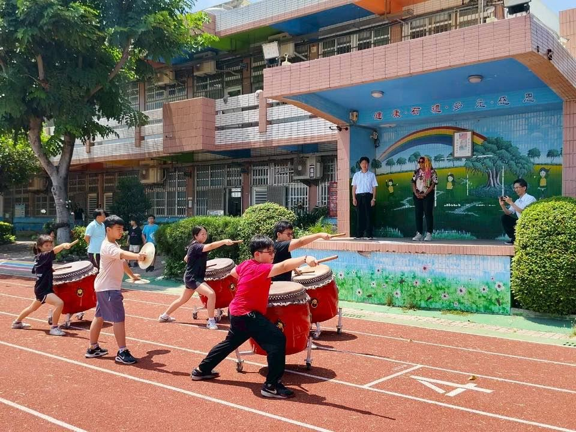
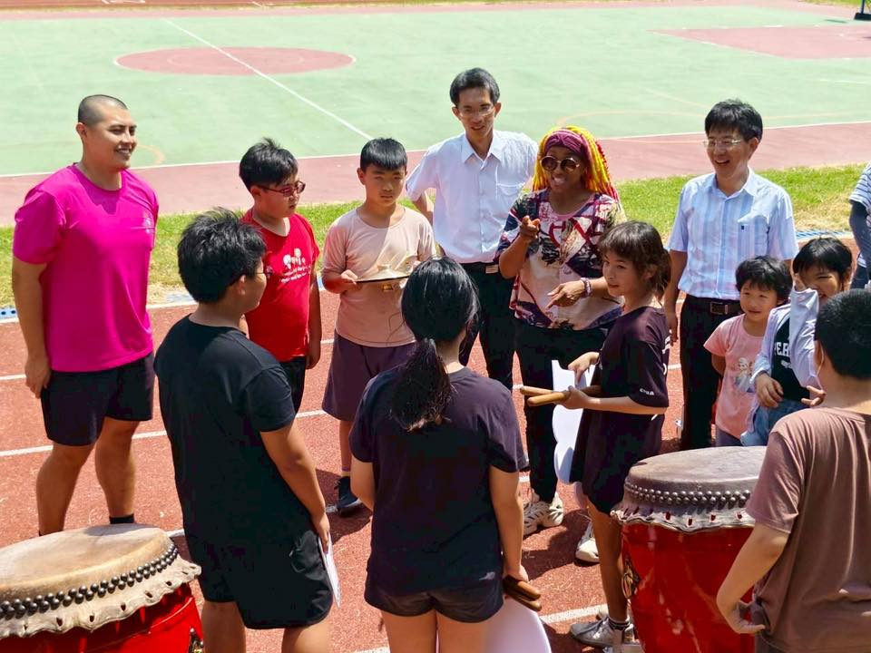
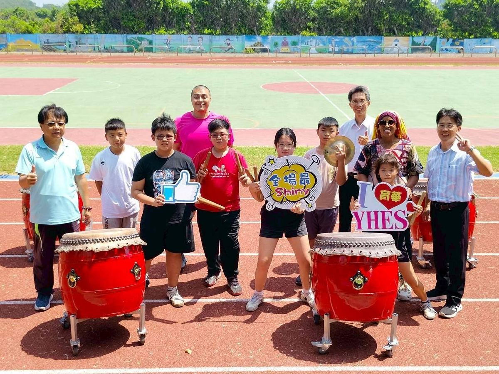
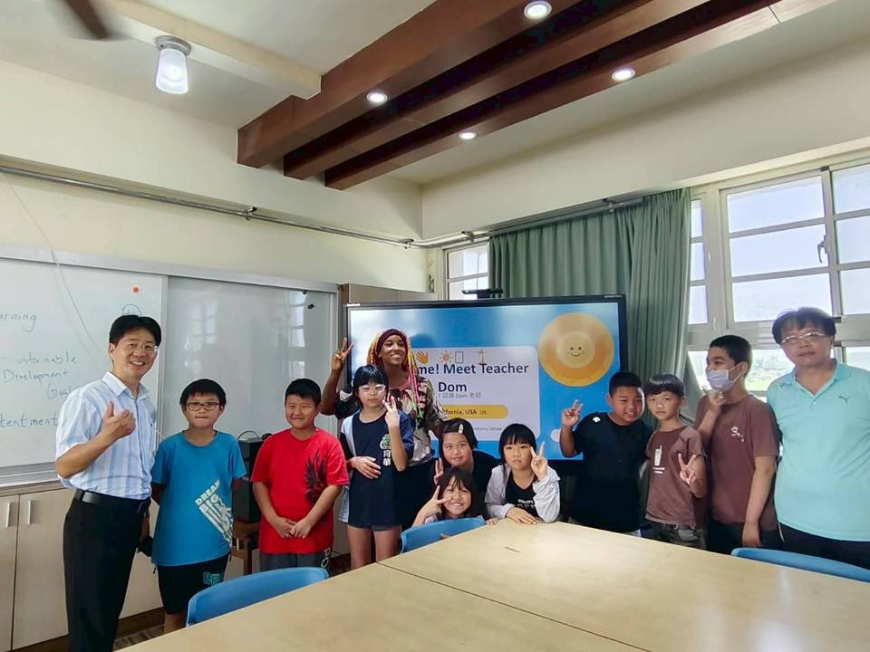
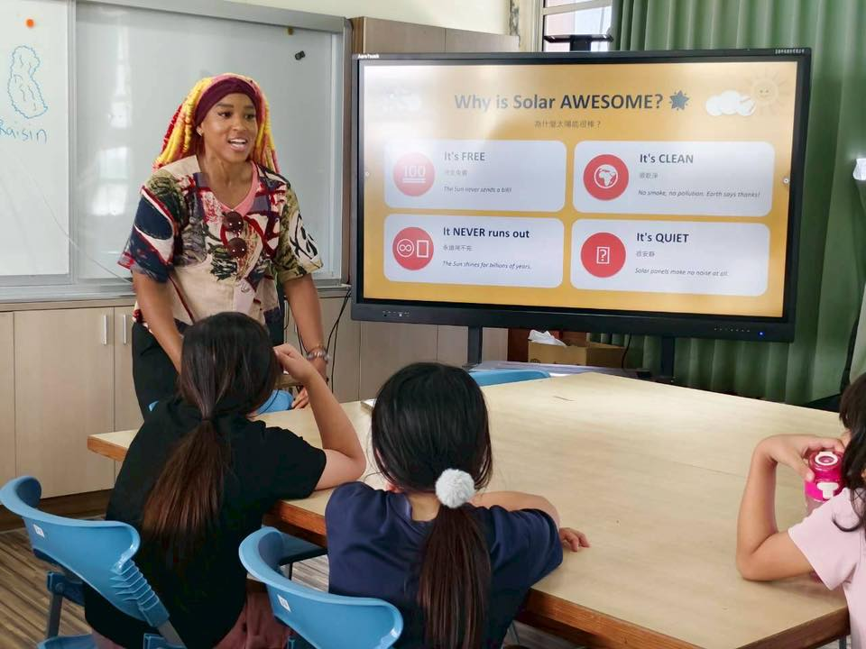
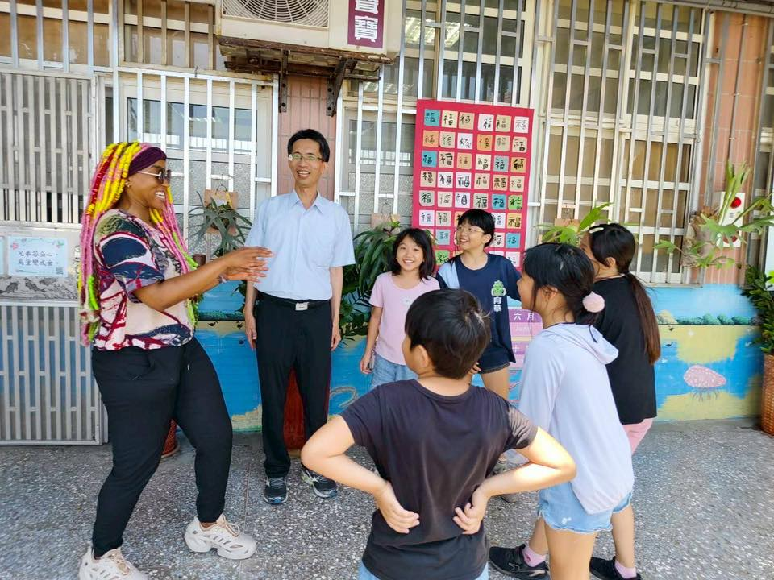
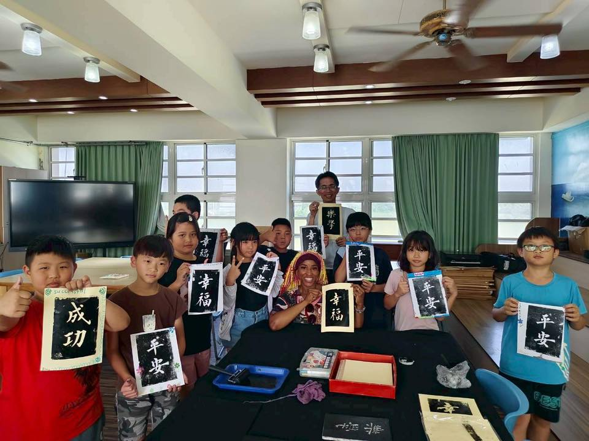
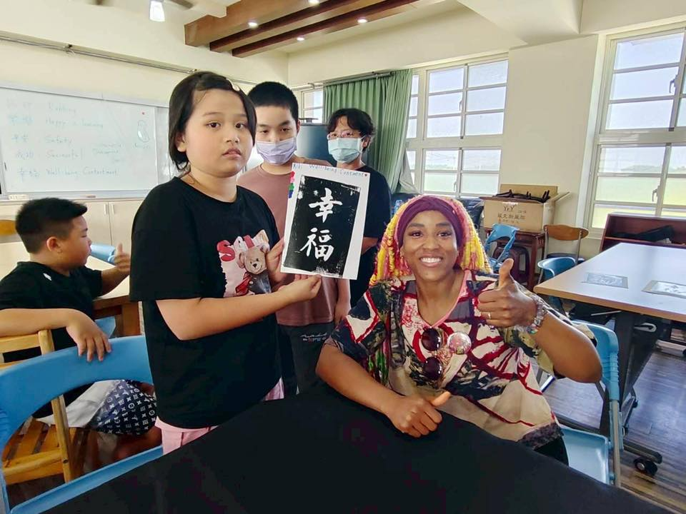
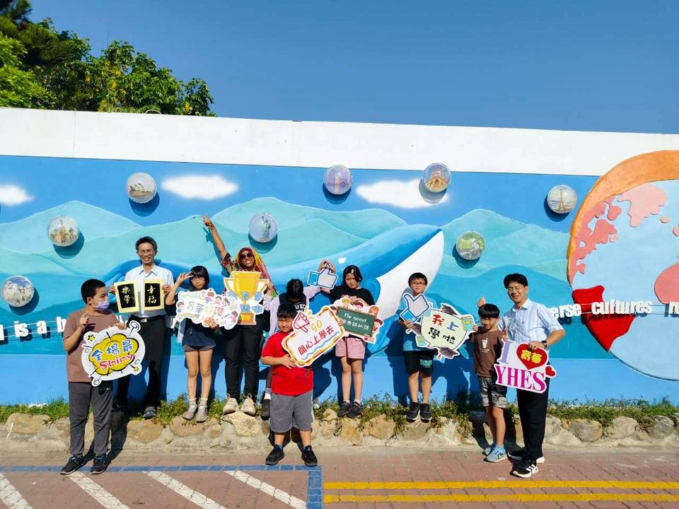
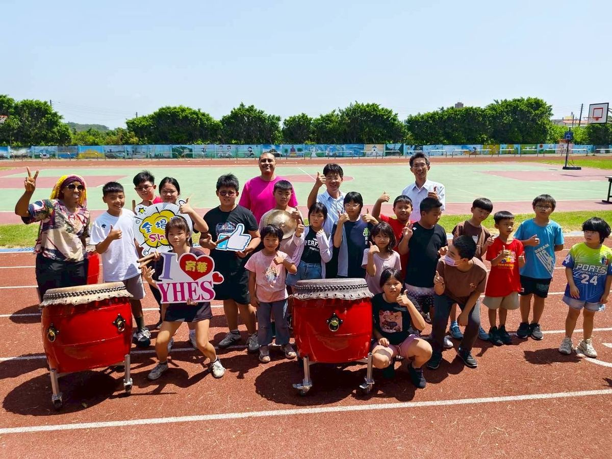
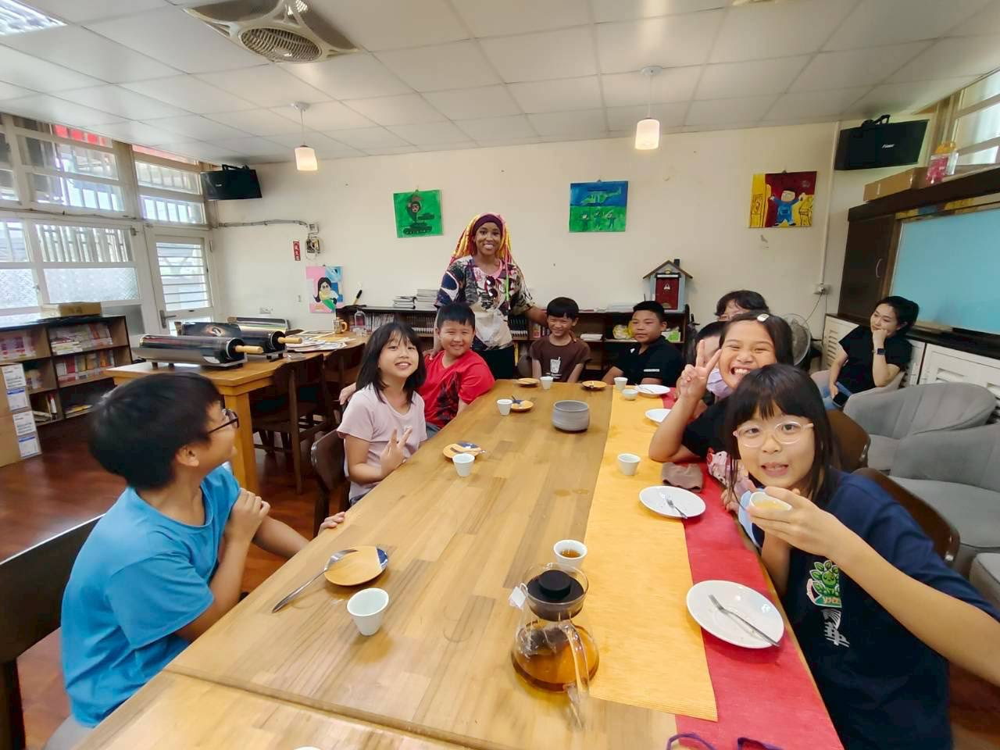
Source · 育華國小 Facebook · #SDGsInAction #國際教育 #世界在育華每個孩子都成功
In partnership with 彰化縣人師教育協會 · My Culture Connect